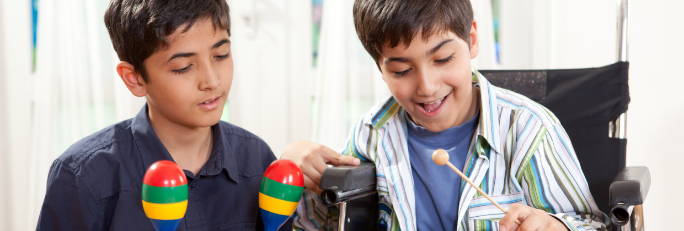
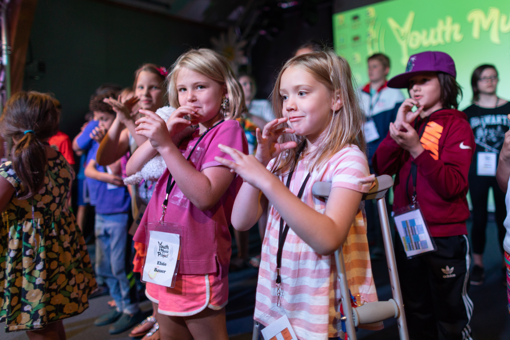
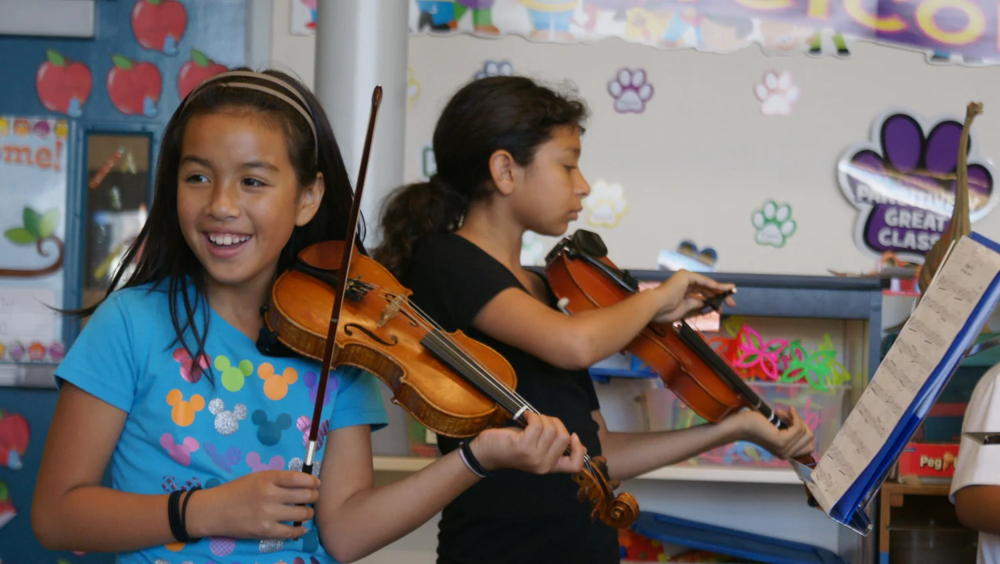

Nossos Projetos
A Música Viva desenvolve projetos socioculturais que unem educação, arte e cidadania. Cada iniciativa é planejada para atender às necessidades pedagógicas, emocionais e sociais das crianças e adolescentes participantes, promovendo a transformação individual e coletiva por meio da música. Os projetos são estruturados com base em três pilares:
Escola de Música Viva
Escola de Música Viva é o projeto central da ONG, sendo a principal porta de entrada para os alunos. Seu objetivo é oferecer educação musical gratuita e de qualidade, despertando talentos e construindo novas perspectivas de futuro para crianças e adolescentes de baixa renda.alentos e construindo novas perspectivas de futuro para crianças e adolescentes de baixa renda. As aulas acontecem semanalmente e incluem:
- Instrumentos: violão, teclado, flauta doce, percussão e canto coral;
- Teoria musical: leitura de partituras, percepção auditiva, ritmo e harmonia;
- Prática em grupo: ensaios coletivos, apresentações e pequenas performances públicas;
- Expressão artística: incentivo à criatividade, improvisação e composição.
Os alunos têm acesso gratuito aos instrumentos e materiais durante as aulas e são acompanhados por uma equipe de professores, educadores musicais e voluntários qualificados. Além do aprendizado técnico, a Escola de Música Viva trabalha valores como disciplina, respeito, cooperação e autoestima, mostrando aos participantes que a música pode ser um caminho para o desenvolvimento pessoal e social.
Coral Vozes Vivas
O Coral Vozes Vivas é um projeto que estimula a expressão vocal, o trabalho em grupo e o senso de pertencimento entre os participantes da ONG.Formado por alunos da Escola de Música Viva, o coral proporciona aulas de técnica vocal, respiração, afinação e interpretação, sempre em um ambiente leve e inclusivo. O projeto também desenvolve competências socioemocionais, como:
- Autoconfiança e superação da timidez.
- Trabalho em equipe e empatia.
- Responsabilidade coletiva e disciplina artística.
O grupo realiza apresentações em escolas, praças, eventos culturais e ações sociais, levando música, emoção e esperança às comunidades locais. Além de ser um espaço de aprendizado musical, o coral é também um espaço de convivência e pertencimento, onde os jovens fortalecem laços de amizade e ampliam suas referências culturais. Repertório: músicas populares brasileiras, canções folclóricas, temas regionais e composições autorais criadas pelos próprios alunos. Impacto: o Coral Vozes Vivas promove a inclusão e a valorização das vozes juvenis como forma de protagonismo social.
